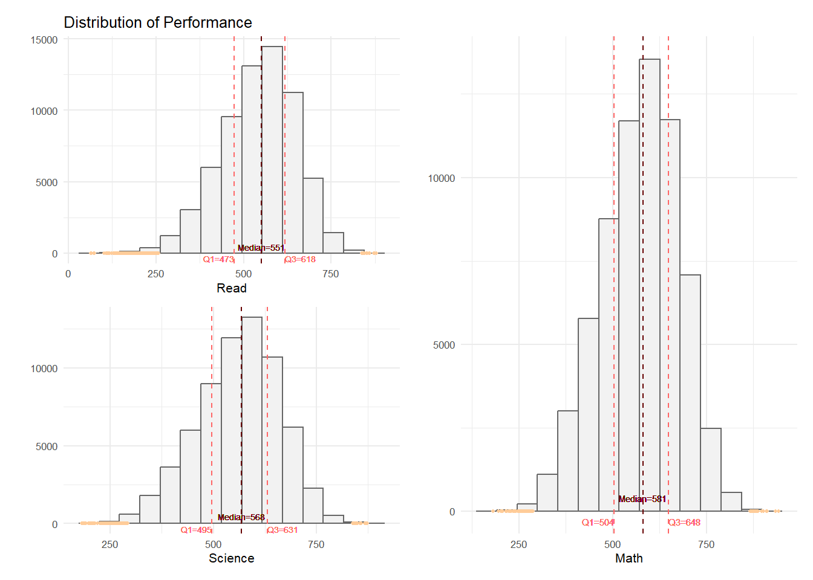
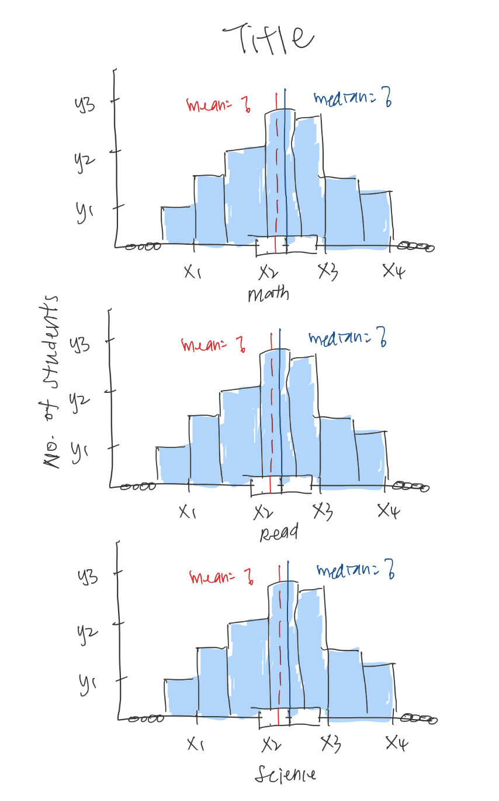
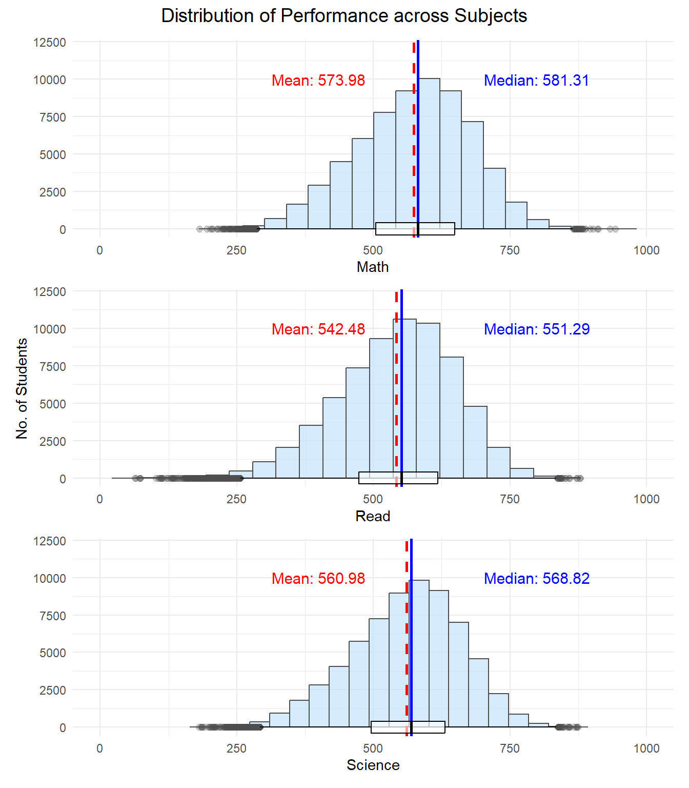
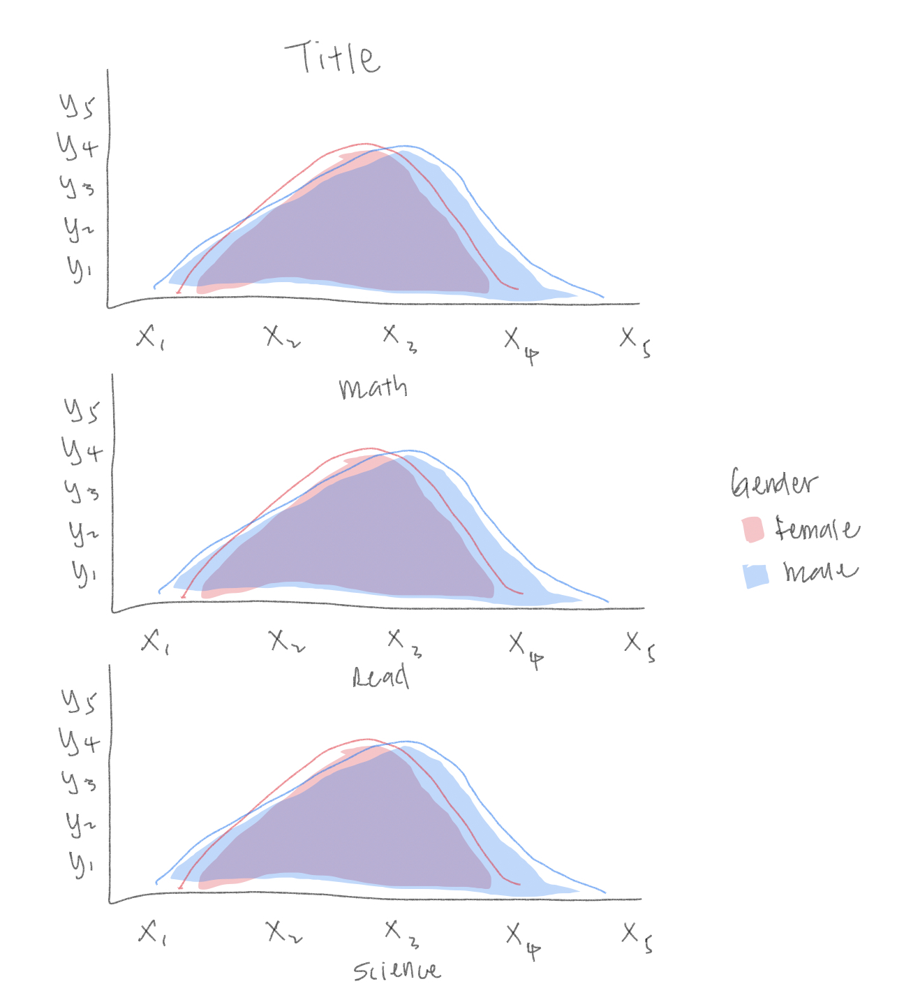
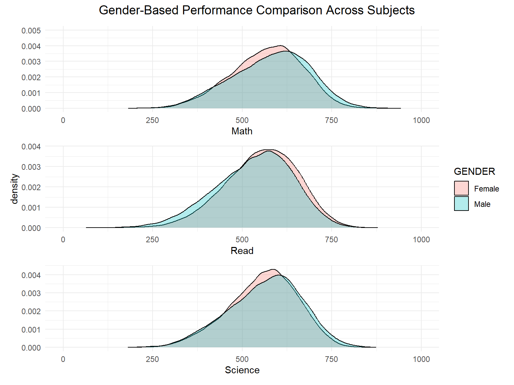
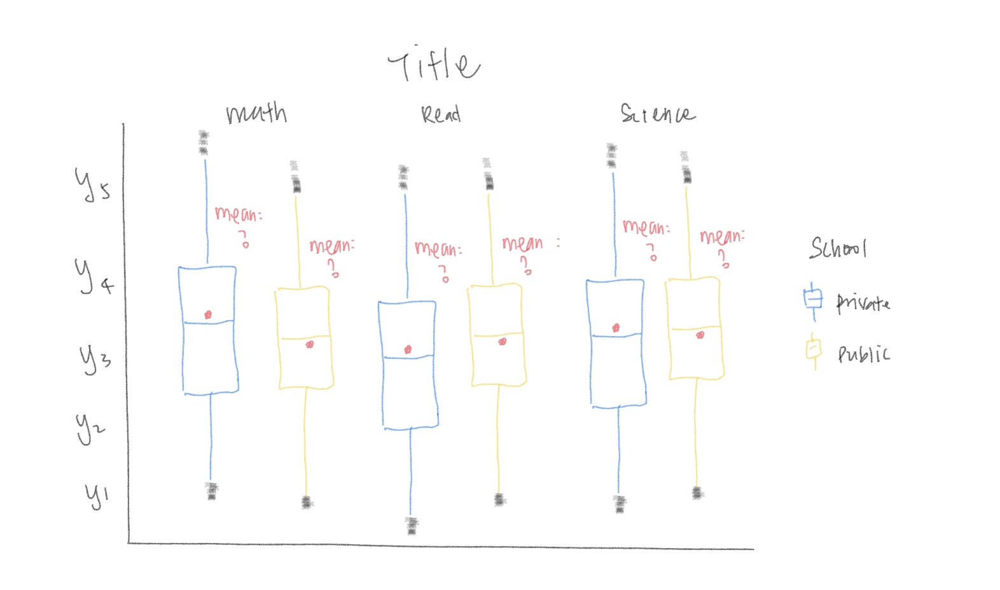
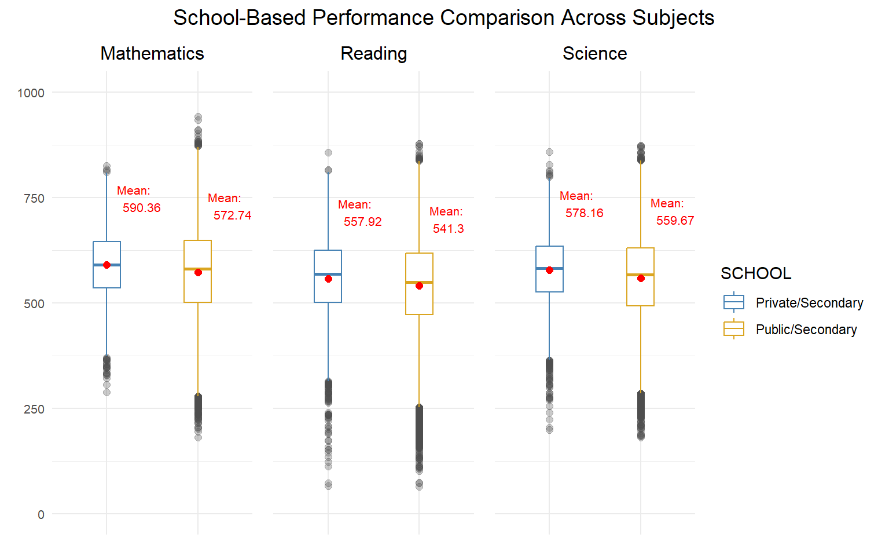
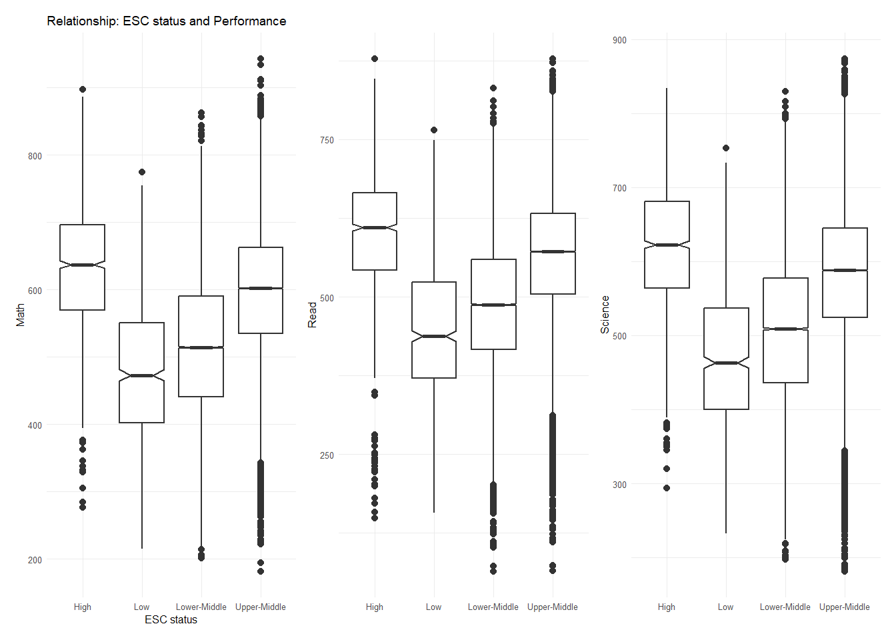
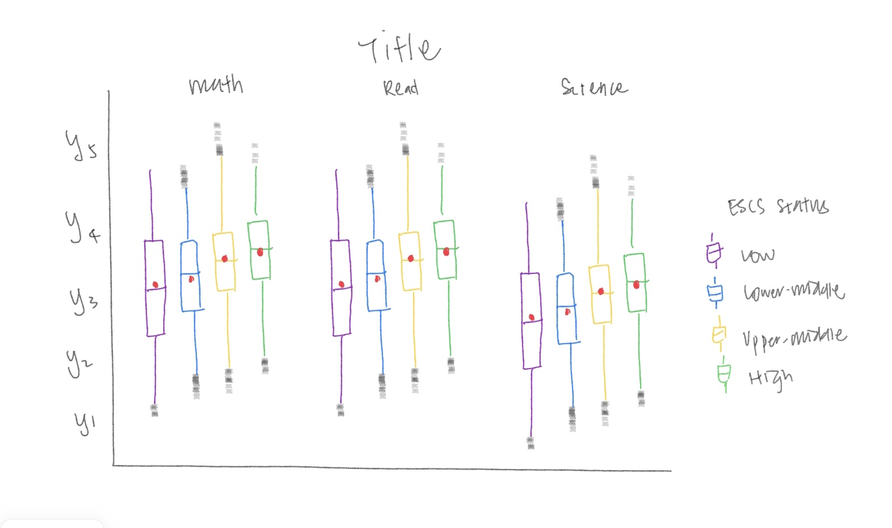
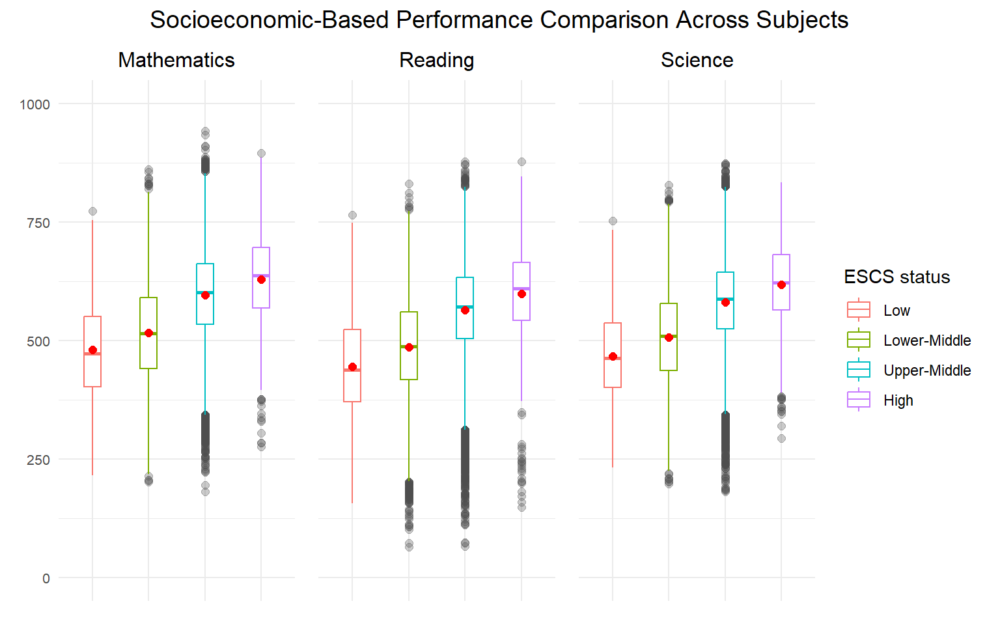

pacman::p_load(tidyverse, haven, patchwork, ggdist, ggrain, ggridges, quarto)Take-home Exercise 2
DataVis Makeover
1 Overview
The aim of this exercise is to perform a makeover to improve the original visualisation completed by one of the classmates on exercise 1. In terms of the makeover, our approach is to critic the submission in terms of the clarity and aesthetic then remake the original design by using the data visualisation design principles and best practices we had learnt.
2 Data preparation
2.1 Loading R packages
2.2 Importing PISA data
stu_qqq_SG <- read_rds("data/stu_qqq_SG.rds")
select_df <- stu_qqq_SG[c(3:4,7,26,1039,1167:1196)]2.3 Data cleaning
To ensure consistency in the dataset employed for make over, I refer to the code chunk used by the original author. However, I will not go into details as it is not the focus of this exercise.
Expand the following session to show the code chunk.
Code
#Convert wide-format into long-format
math_long <- select_df %>%
pivot_longer(
cols = contains("MATH"),
names_to = "MATH",
values_to = "MATH_score"
)
math_long <- math_long %>%
arrange(CNTSCHID, CNTSTUID, STRATUM, ST004D01T, ESCS)
math_long_selected <- select(math_long, -contains("READ"), -contains("SCIE"))
read_long <- select_df %>%
pivot_longer(
cols = contains("READ"),
names_to = "READ",
values_to = "READ_score"
)
read_long <- read_long %>%
arrange(CNTSCHID, CNTSTUID, STRATUM, ST004D01T, ESCS)
read_long_selected <- select(read_long, -contains("MATH"), -contains("SCIE"), -one_of(names(math_long_selected)))
scie_long <- select_df %>%
pivot_longer(
cols = contains("SCIE"),
names_to = "SCIENCE",
values_to = "SCIENCE_score"
)
scie_long <- scie_long %>%
arrange(CNTSCHID, CNTSTUID, STRATUM, ST004D01T, ESCS)
scie_long_selected <- select(scie_long, -contains("MATH"), -contains("READ"), -one_of(names(math_long_selected)))
combined_long_df <- bind_cols(math_long_selected, read_long_selected, scie_long_selected)Code
#translate column names
school_map <- c("SGP01" = "Public/Secondary",
"SGP02" = "Public/Post-secondary",
"SGP03" = "Private/Secondary",
"SGP97" = "Undisclosed")
gender_map <- c("1" = "Female",
"2" = "Male")
clean_df <- combined_long_df %>%
mutate(SCHOOL = school_map[STRATUM],
GENDER = gender_map[ST004D01T],
Math = as.numeric(MATH_score),
Read = as.numeric(READ_score),
Science = as.numeric(SCIENCE_score),
ESC_status = round(((ESCS - min(ESCS, na.rm = TRUE))/
(max(ESCS, na.rm = TRUE)-min(ESCS, na.rm = TRUE)))*100, digits = 0),
ESC_status = case_when(
ESC_status >= 0 & ESC_status < 25 ~ "Low",
ESC_status >= 25 & ESC_status < 50 ~ "Lower-Middle",
ESC_status >= 50 & ESC_status < 75 ~ "Upper-Middle",
ESC_status >= 75 & ESC_status <= 100 ~ "High",
TRUE ~ as.character(ESC_status)
))
#remove columns which are not used to plot
clean_short_df <- clean_df %>%
select(-c(CNTSCHID, STRATUM, ST004D01T, ESCS, MATH_score, READ_score, SCIENCE_score))Code
#translate column names
school_map <- c("SGP01" = "Public/Secondary",
"SGP02" = "Public/Post-secondary",
"SGP03" = "Private/Secondary",
"SGP97" = "Undisclosed")
gender_map <- c("1" = "Female",
"2" = "Male")
clean_df <- combined_long_df %>%
mutate(SCHOOL = school_map[STRATUM],
GENDER = gender_map[ST004D01T],
Math = as.numeric(MATH_score),
Read = as.numeric(READ_score),
Science = as.numeric(SCIENCE_score),
ESC_status = round(((ESCS - min(ESCS, na.rm = TRUE))/
(max(ESCS, na.rm = TRUE)-min(ESCS, na.rm = TRUE)))*100, digits = 0),
ESC_status = case_when(
ESC_status >= 0 & ESC_status < 25 ~ "Low",
ESC_status >= 25 & ESC_status < 50 ~ "Lower-Middle",
ESC_status >= 50 & ESC_status < 75 ~ "Upper-Middle",
ESC_status >= 75 & ESC_status <= 100 ~ "High",
TRUE ~ as.character(ESC_status)
))
#remove columns which are not used to plot
clean_short_df <- clean_df %>%
select(-c(CNTSCHID, STRATUM, ST004D01T, ESCS, MATH_score, READ_score, SCIENCE_score))3 Visualization Critique and Remake
3.1 Plot 1
The following plot illustrates the distribution of students’ performance across Mathematics, Science and English.

3.1.1 Critique
Clarity
Misleading Layout: Two of the plots are stacked on the left with one larger plot on the right. The arrangement may confuse the focus and hinder direct comparison, stacking them vertically would provide a clearer comparison across all subjects.
Inconsistencies in Axis Values: The x-axis and y-axis values are inconsistent across the plots, it hampers the ability to make direct comparisons, affecting the clarity of the comparative analysis.
Indistinguishable Color Usage: The line colors for median, Q1, and Q3 are too similar, which make it hard to differentiate between these statistics.
Overlapping Annotations: While displaying annotations and statistics on the graph can be informative, it is difficult for the user to read when the annotations overlap with the histogram
Aesthetics
Plot Title Font Size: The plot title is in a bigger font size, which enhances the emphasis and readability.
Minimalist Design: A minimalist approach ensures a clean look. Yet, using only monochromatic tone is less visually engaging.
Annotation Colors: Distinct colors for annotations enhance visual interest and draw attention to important figures.
3.1.2 Sketch

3.1.3 Make Over
Code
#Plot composite histograms for Math, Read, Science
p1 <- ggplot(data = clean_short_df,
aes(x= Math))+
geom_histogram(bins=20,
color = "grey30",
fill="slategray1",
size = 0.5,
alpha = 0.7) +
geom_vline(aes(xintercept=mean(Math)),
color=c("red"),
size=1,
linetype="dashed") +
annotate("text", x = 400, y = 10000,
label = paste("Mean:",
round(mean(clean_short_df$Math), 2)),
color = "red", size = 4) +
geom_vline(aes(xintercept=median(Math)),
color=c("blue"),
size=1,
linetype="solid") +
annotate("text", x = 800, y = 10000,
label = paste("Median:",
round(median(clean_short_df$Math), 2)),
color = "blue", size = 4) +
coord_cartesian(xlim=c(0,1000), ylim=c(0,12000)) +
geom_boxplot(width = 800,
fill = "white",
color = "black",
alpha = 0.6,
outlier.colour = "grey30",
outlier.fill = "white",
outlier.size = 2,
outlier.alpha = 0.3) +
theme_minimal() +
theme(axis.title.y = element_blank())
p2 <- ggplot(data = clean_short_df,
aes(x= Read))+
geom_histogram(bins=20,
color = "grey30",
fill="slategray1",
size = 0.5,
alpha = 0.7) +
geom_vline(aes(xintercept=mean(Read)),
color=c("red"),
size=1,
linetype="dashed") +
annotate("text", x = 400, y = 10000,
label = paste("Mean:",
round(mean(clean_short_df$Read), 2)),
color = "red", size = 4) +
geom_vline(aes(xintercept=median(Read)),
color=c("blue"),
size=1,
linetype="solid") +
annotate("text", x = 800, y = 10000,
label = paste("Median:",
round(median(clean_short_df$Read), 2)),
color = "blue", size = 4) +
coord_cartesian(xlim=c(0,1000), ylim=c(0,12000)) +
geom_boxplot(width = 800,
fill = "white",
color = "black",
alpha = 0.6,
outlier.colour = "grey30",
outlier.fill = "white",
outlier.size = 2,
outlier.alpha = 0.3) +
labs(y= "No. of Students") +
theme_minimal()
p3 <- ggplot(data = clean_short_df,
aes(x= Science))+
geom_histogram(bins=20,
color = "grey30",
fill="slategray1",
size = 0.5,
alpha = 0.7) +
geom_vline(aes(xintercept=mean(Science)),
color=c("red"),
size=1,
linetype="dashed") +
annotate("text", x = 400, y = 10000,
label = paste("Mean:",
round(mean(clean_short_df$Science), 2)),
color = "red", size = 4) +
geom_vline(aes(xintercept=median(Science)),
color=c("blue"),
size=1,
linetype="solid") +
annotate("text", x = 800, y = 10000,
label = paste("Median:",
round(median(clean_short_df$Science), 2)),
color = "blue", size = 4) +
coord_cartesian(xlim=c(0,1000), ylim=c(0,12000)) +
geom_boxplot(width = 800,
fill = "white",
color = "black",
alpha = 0.6,
outlier.colour = "grey30",
outlier.fill = "white",
outlier.size = 2,
outlier.alpha = 0.3) +
theme_minimal() +
theme(axis.title.y = element_blank())
(p1 / p2 / p3) + plot_annotation(title= "Distribution of Performance across Subjects",
theme = theme(plot.title=element_text(size= 14, hjust= 0.5)))
Layout improvement and consistent axis value: All three plots are stacked vertically with consistent x-axis and y-axis value. This provide a clear and direct comparison across all subjects.
Incorporate box plot: Instead of changing the line colour for median, Q1 and Q3, a box plot is added along the x-axis, along with a mean line, simplifies the interpretation of central tendency, spread, and outliers, enhancing the visualization of key statistical data.
Annotations: To enhance readability and interpretation, annotations have been placed above the histogram with distinct colors, ensuring they do not overlap with the data and remain clearly visible to users.
Improved Color Scheme: While maintaining a minimalist theme, the introduction of a blue fill to the histogram created color contrast, improving both visual appeal and data differentiation.
3.2 Plot 2
This combined density plot overlays the distributions of math performance for different genders across three subjects.

3.2.1 Critique
Clarity
Title : The title is too generic and does not provide enough context about the plot.
Plot type: Good choice of density plot for understanding the distribution of data.
Misleading Layout: Two plots are stacked on the left with one larger plot on the right. The arrangement may confuse the focus and hinder direct comparison, stacking them vertically would provide a clearer comparison across all subjects.
Axis Label: When the plots are stacked together, using only one label enhances the clarity and neatness of the plot
Axis scale: Well-used of consistent x-axis scale which enhances the comparability between subjects.
Consistency: Ensure all plots consistently include or exclude annotations for comparative analysis.
Aesthetic
Minimalist Design: A minimalist approach ensures a clean look, focusing on essential data.
Color Choice: Effective use of colour to distinguish between male and female performance distribution.
3.2.2 Sketch

3.2.3 Make Over
Code
##Gender and Subject
#1. Math
p4 <- ggplot(data = clean_short_df,
aes(x = Math,
fill = GENDER)) +
geom_density(alpha = 0.3) +
coord_cartesian(xlim = c(0, 1000), ylim = c(0, 0.005)) +
theme_minimal()+
theme(legend.position = "none") +
theme(axis.title.y = element_blank())
p5 <- ggplot(data = clean_short_df,
aes(x = Read,
fill = GENDER)) +
geom_density(alpha=0.3) +
coord_cartesian(xlim = c(0, 1000)) +
theme_minimal()
p6 <- ggplot(data = clean_short_df,
aes(x = Science,
fill = GENDER)) +
geom_density(alpha=0.3) +
coord_cartesian(xlim = c(0, 1000)) +
theme_minimal()+
theme(legend.position = "none") +
theme(axis.title.y = element_blank())
(p4 / p5 /p6) + plot_annotation(title=
"Gender-Based Performance Comparison Across Subjects",
theme = theme(plot.title=element_text(size= 14, hjust= 0.5)))
Clarity of Title: Improved the title to provide more context about the plot, making it more informative and engaging.
Layout improvement and consistent axis value: Reorganized the layout by stacking all plots vertically with consistent x-axis and y-axis value. This provide a clear and direct comparison across all subjects.
Consistency in Annotations: Ensured that all plots consistently exclude annotations for comparative analysis. This consistency allows users to better understand and interpret the data.
3.3 Plot 3
In the following plot, boxplot is used to examine performance on each subject in terms of school types.

3.3.1 Critique
Clarity
Title : The title is too generic and does not provide enough context about the plot.
Plot type and layout : Good choice of box plot and side-by-side arrangement for comparing the performance of private and public school across different subjects.
Axis Title and label: The x-axis label is repetitive, consider simplifying it to enhance the clarity and help in comparison.
Axis Values: The y-axis values are inconsistent across the plots, which limits the ability to make direct comparison.
Subtitle : Instead of using subject as y-axis label, placing it on top of each plot as subtitle would enhance overall clarity.
Data Points: Outliers are identified, which is helpful to understand the distribution. However, as they are stacked together, it’s difficult to interpret the outliers’ distribution and significance.
Aesthetic
Simplicity: The design is simple, which is good for clarity but can be less engaging.
Consistency: The styling is consistent across all plots.
3.3.2 Sketch

3.3.3 Make Over
Code
# Deriving mean value
Math_school <- clean_short_df %>%
group_by(SCHOOL) %>%
summarise(
Freq = n(),
Mean = mean(Math, na.rm= TRUE))
Read_school <- clean_short_df %>%
group_by(SCHOOL) %>%
summarise(
Freq = n(),
Mean = mean(Read, na.rm= TRUE))
Science_school <- clean_short_df %>%
group_by(SCHOOL) %>%
summarise(
Freq = n(),
Mean = mean(Science, na.rm= TRUE))
# Ploting boxplot
p7 <- ggplot(data= clean_short_df,
aes(x= SCHOOL, y= Math, color = SCHOOL)) +
geom_boxplot(width= 0.3, outlier.colour = "grey30", outlier.size = 2,
outlier.alpha = 0.3, outlier.shape = 19) +
coord_cartesian(ylim = c(0, 1000)) +
stat_summary(geom = "point",
fun.y="mean",
colour ="red",
size=2) + coord_cartesian(ylim = c(0,1000)) +
geom_text(data = Math_school,
aes(x = SCHOOL, y=Mean, label = paste("Mean:\n", round(Mean,2))),
color = "red",
hjust = -0.3,
vjust = -2,
size= 2.75)+
scale_color_manual(values=c("steelblue", "goldenrod")) +
theme_minimal() +
labs(title="Mathematics") +
theme(axis.title.x = element_blank(),
axis.title.y = element_blank(),
axis.text.x = element_blank(),
plot.title=element_text(size= 12, hjust= 0.5),
axis.text = element_text(size= 8))
p8 <- ggplot(data= clean_short_df,
aes(x= SCHOOL, y= Read, color = SCHOOL)) +
geom_boxplot(width= 0.3, outlier.colour = "grey30", outlier.size = 2,
outlier.alpha = 0.3, outlier.shape = 19) +
coord_cartesian(ylim = c(0, 1000)) +
stat_summary(geom = "point",
fun.y="mean",
colour ="red",
size=2) + coord_cartesian(ylim = c(0,1000)) +
geom_text(data = Read_school,
aes(x = SCHOOL, y=Mean, label = paste("Mean:\n", round(Mean,2))),
color = "red",
hjust = -0.3,
vjust = -2,
size= 2.75)+
scale_color_manual(values=c("steelblue", "goldenrod")) +
theme_minimal() +
labs(title="Reading") +
theme(axis.title.x = element_blank(),
axis.title.y = element_blank(),
axis.text.x = element_blank(),
axis.text.y = element_blank(),
plot.title=element_text(size= 12, hjust= 0.5),
axis.text = element_text(size= 10))
p9 <- ggplot(data= clean_short_df,
aes(x= SCHOOL, y= Science, color = SCHOOL)) +
geom_boxplot(width= 0.3, outlier.colour = "grey30", outlier.size = 2,
outlier.alpha = 0.3, outlier.shape = 19) +
coord_cartesian(ylim = c(0, 1000)) +
stat_summary(geom = "point",
fun.y="mean",
colour ="red",
size=2) + coord_cartesian(ylim = c(0,1000)) +
geom_text(data = Science_school,
aes(x = SCHOOL, y=Mean, label = paste("Mean:\n", round(Mean,2))),
color = "red",
hjust = -0.3,
vjust = -2,
size= 2.75)+
scale_color_manual(values=c("steelblue", "goldenrod")) +
theme_minimal() +
labs(title="Science") +
theme(axis.title.x = element_blank(),
axis.title.y = element_blank(),
axis.text.x = element_blank(),
axis.text.y = element_blank(),
plot.title=element_text(size= 12, hjust= 0.5),
axis.text = element_text(size= 10))
p7 + p8 + p9 +
plot_layout(guides = "collect") +
plot_annotation(title= "School-Based Performance Comparison Across Subjects",
theme = theme(plot.title=element_text(size= 14, hjust= 0.5)))
Title: The title has been revised to provide more context about the plot.
Aesthetic and Engagement: Different colors are assigned to each school type, not only enhancing visual appeal but also make it easier to distinguish between the two categories.
Axis Title and label: Repetitive x-axis labels have been removed and a clear legend has been used to improve clarity and facilitate comparison.
Consistency in Axes: The y-axis values were standardized for all plots, which enabled direct comparison across all subjects.
Subtitle: Placing subject names as subtitles provides clear identification for each plot.
Data Points: The opacity of the outliers are adjusted to enhance clarity, and mean values are highlighted with red dots and annotation for easy reference.
3.4 Plot 4
The following plot reveals the relationship between student performance and socioeconomic status across different subjects.

3.4.1 Critique
Clarity
Title : The title is too generic and does not provide enough context about the plot.
Plot type and layout: Good choice of box plot and side-by-side arrangement for comparing the performance of various socioeconomic status across different subjects.
Axis Title and label: The x-axis label is repetitive, consider simplifying it to enhance the clarity and help in comparison. Incorrectly ordered of x-axis data, can mislead users and leading to potential misinterpretations.
Axis Values: The y-axis values are inconsistent across the plots, which limits the ability to make direct comparisons.
Subtitle : Instead of using subject as y-axis label, placing it on top of each plot as subtitle would enhance overall clarity.
Data Points: Outliers are identified, which is helpful to understand the distribution. However, as they are stacked together, it’s difficult to interpret the outliers’ distribution and significance.
Aesthetic
Simplicity: The design is simple, which is good for clarity but can be less engaging.
Consistency: The styling is consistent across all plots.
3.4.2 Sketch

3.4.3 Make Over
Code
clean_short_df$ESC_status <- factor(clean_short_df$ESC_status, levels = c("Low", "Lower-Middle", "Upper-Middle", "High"))
p10 <- ggplot(data= na.omit(clean_short_df),
aes(x= ESC_status, y= Math, color = ESC_status)) +
geom_boxplot(width= 0.3, outlier.colour = "grey30", outlier.size = 2,
outlier.alpha = 0.3, outlier.shape = 19) +
coord_cartesian(ylim = c(0, 1000)) +
stat_summary(geom = "point",
fun.y="mean",
colour ="red",
size=2) +
coord_cartesian(ylim = c(0,1000)) +
theme_minimal() +
labs(title="Mathematics") +
theme(axis.title.x = element_blank(),
axis.title.y = element_blank(),
axis.text.x = element_blank(),
plot.title=element_text(size= 12, hjust= 0.5),
axis.text = element_text(size= 8)) +
labs(color = "ESCS status")
p11 <- ggplot(data= na.omit(clean_short_df),
aes(x= ESC_status, y= Read, color = ESC_status)) +
geom_boxplot(width= 0.3, outlier.colour = "grey30", outlier.size = 2,
outlier.alpha = 0.3, outlier.shape = 19) +
coord_cartesian(ylim = c(0, 1000)) +
stat_summary(geom = "point",
fun.y="mean",
colour ="red",
size=2) +
coord_cartesian(ylim = c(0,1000)) +
theme_minimal() +
labs(title="Reading") +
theme(axis.title.x = element_blank(),
axis.title.y = element_blank(),
axis.text.x = element_blank(),
axis.text.y = element_blank(),
plot.title=element_text(size= 12, hjust= 0.5),
axis.text = element_text(size= 10)) +
labs(color = "ESCS status")
p12 <- ggplot(data= na.omit(clean_short_df),
aes(x= ESC_status, y= Science, color = ESC_status)) +
geom_boxplot(width= 0.3, outlier.colour = "grey30", outlier.size = 2,
outlier.alpha = 0.3, outlier.shape = 19) +
coord_cartesian(ylim = c(0, 1000)) +
stat_summary(geom = "point",
fun.y="mean",
colour ="red",
size=2) +
coord_cartesian(ylim = c(0,1000)) +
theme_minimal() +
labs(title="Science") +
theme(axis.title.x = element_blank(),
axis.title.y = element_blank(),
axis.text.x = element_blank(),
axis.text.y = element_blank(),
plot.title=element_text(size= 12, hjust= 0.5),
axis.text = element_text(size= 10)) +
labs(color = "ESCS status")
p10 + p11 + p12 +
plot_layout(guides = "collect") +
plot_annotation(title= "Socioeconomic-Based Performance Comparison Across Subjects",
theme = theme(plot.title=element_text(size= 14, hjust= 0.5)))
Title: The title has been revised to provide more context about the plot.
Aesthetic and Engagement: Different colors are assigned to each socioeconomic status, not only enhancing visual appeal but also make it easier to distinguish between the categories.
Axis Title and label: Repetitive x-axis labels have been removed and a clear legend has been used to improve clarity and facilitate comparison. The x-axis data has been corrected to represent the categories in a logical sequence, ensuring clear and accurate comparisons and preventing any potential misinterpretation.
Consistency in Axes: The y-axis values were standardized for all plots, which enabled direct comparison across all subjects.
Subtitle: Placing subject names as subtitles provides clear identification for each plot.
Data Points: The opacity of the outliers are adjusted to enhance clarity, and mean values are highlighted with red dots for easy reference.
Code
<!-- Include the pop-up template -->
<iframe src="popup_template.html" frameborder="0" width="100%" height="400"></iframe>To view the comparison, click here.